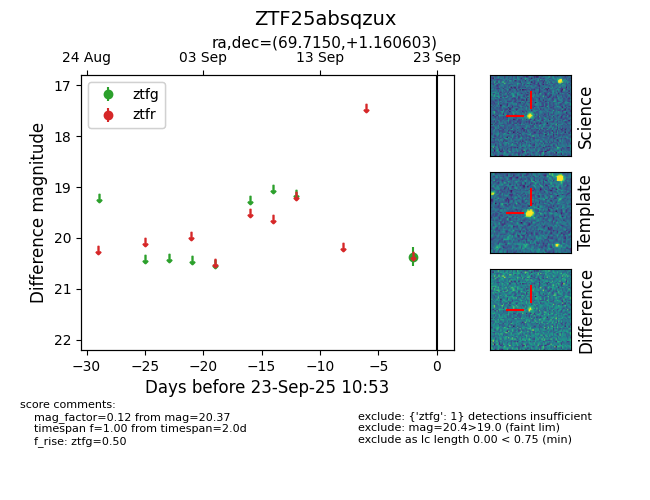

FINK: ZTF25absqzux
Lasair: ZTF25absqzux
ALeRCE: ZTF25absqzux
ZTF25absqzux (ztf,fink)
equatorial (ra, dec) = (69.7150,+1.16060)
galactic (l, b) = (195.2241,-28.50703)

last ztfg=20.37
1 ztfg detections